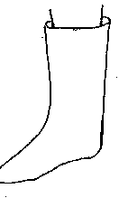

![[SHOE IMAGE]](./img/ASHOE29.GIF)
![[SHOE IMAGE]](./img/ASHOE30.GIF)
![[SHOE IMAGE]](./img/ASHOE31.GIF)
![[SHOE IMAGE]](./img/ASHOE67.GIF)
![[SHOE IMAGE]](./img/ASHOE68.GIF)
![[SHOE IMAGE]](./img/ASHOE69.GIF)
![[SHOE IMAGE]](./img/ASHOE70.GIF)
![[SHOE IMAGE]](./img/ASHOE71.GIF)
![[SHOE IMAGE]](./img/ASHOE74.GIF)
![[SHOE IMAGE]](./img/ASHOE75.GIF)
![[SHOE IMAGE]](./img/ASHOE53.GIF)
| (Note: Some of the freakier non-historical speculative shoes have been removed) | |
|
 |
Riding boot (Speculative) |
|
|
Basic long-toed shoe |
|
|
Drawstring boot |
|
|
Footed Hose (Speculative) |
|
|
Ankle Strap Shoe |
|
|
Side Laced Shoe |
|
|
Peaked Shoe |
|
|
Peaked Shoe |
|
|
Side Strap Shoe |
|
|
Buckle Front Boot |
|
|
Button Front Boot |
|
|
Commoner's shoe (Speculative) |
Return to Contents
Footwear of the Middle Ages - Shoe Design List/Middle Ages (c1200-1300), by I. Marc
Carlson. Copyright 1996
This page is given for the free exchange of information, provided the author's name is
included in all future revisions, and no money change hands, other than as expressed in
the Copyright Page.